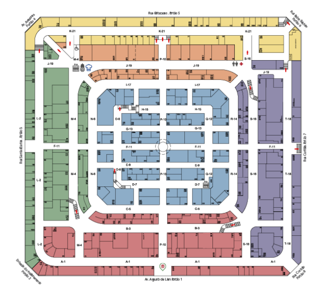
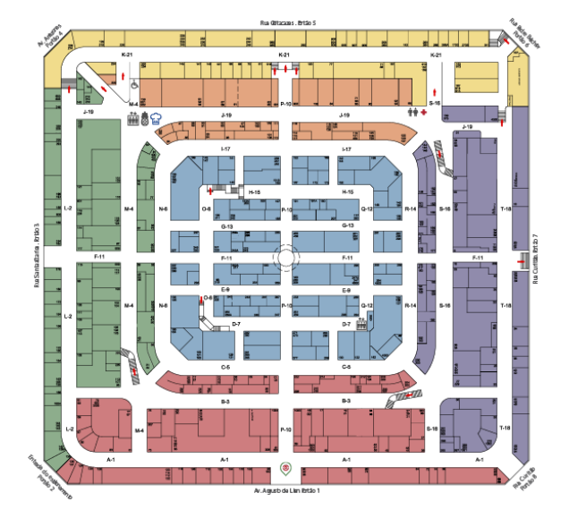

Localizado no coração da capital mineira, o Mercado Central de Belo Horizonte é uma verdadeira joia que atrai moradores locais e turistas de todo o mundo. Inaugurado em 7 de setembro de 1929, o mercado é muito mais do que um simples local de compras; é um ícone cultural e gastronômico que celebra a rica herança de Minas Gerais.
 

O Mercado Central tem uma história rica e vibrante que remonta ao início do século XX. Desde a sua inauguração, ele tem sido um ponto de encontro para os moradores da cidade, que vêm aqui não apenas para comprar produtos frescos e artesanatos, mas também para desfrutar da atmosfera animada e acolhedora do mercado.
Com mais de 400 lojas, o Mercado Central oferece uma variedade impressionante de produtos que vão desde queijos e doces tradicionais até especiarias exóticas e artesanatos únicos. É o lugar perfeito para encontrar lembranças autênticas de Minas Gerais e experimentar os sabores locais em sua forma mais pura.
Uma das maiores atrações do Mercado Central é a sua incrível seleção de comida. Aqui, você pode saborear alguns dos pratos mais deliciosos da culinária mineira, como o tradicional pão de queijo, o feijão tropeiro, o tutu de feijão e muito mais. Não deixe de experimentar também os quitutes típicos, como os queijos frescos, as linguiças artesanais e os doces caseiros que são verdadeiras tentações para os amantes da boa comida.
Além de ser um centro comercial movimentado, o Mercado Central também é um local onde a cultura e a tradição de Minas Gerais estão vivas e pulsantes. Aqui, você encontrará apresentações de música ao vivo, exposições de arte e eventos culturais que celebram a rica herança do estado.
Visitar o Mercado Central de Belo Horizonte é muito mais do que uma simples atividade turística; é uma experiência que ficará gravada na memória para sempre. É um lugar onde os aromas, sabores e cores de Minas Gerais se encontram para criar uma experiência verdadeiramente única e inesquecível.